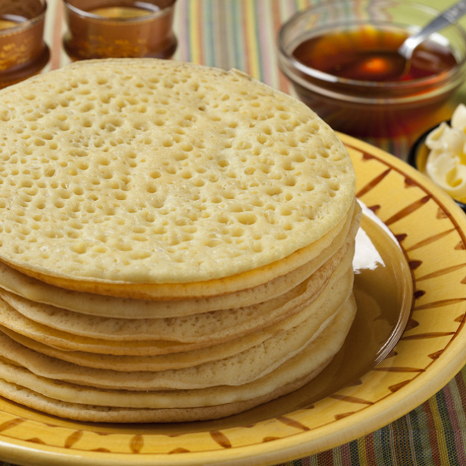

Baghrir

Description
Baghrir, also known as Moroccan pancakes, are spongy pancakes made from semolina and yeast. They are characterized by their unique honeycomb texture and are typically served with a drizzle of butter and honey.
Ingredients
- 1 cup warm water (115 degrees F/46 degrees C)
- ½ teaspoon active dry yeast
- ½ teaspoon white sugar
- 1 cup milk
- 1 cup all-purpose flour
- 1 cup semolina flour
- 2 eggs
- 2 teaspoons baking powder
- 1 teaspoon salt
Steps
- Place the water, yeast, and sugar in a blender, and let stand without blending for 5 minutes, until the yeast softens and begins to form a creamy foam. Add the milk, flour, semolina flour, eggs, baking powder, and salt. Blend until the mixture is smooth, about 1 minute. Leave the mixture in the blender to rest for about 30 minutes.
- Heat a 5-inch nonstick skillet over medium-low heat. Blend the pancake mixture for about 10 seconds, to remix, and scoop 1/4 to 1/3 cup of batter into the heated skillet. Cook the baghrir until bubbles have formed and popped, and the top of the pancake is no longer shiny, about 3 minutes. Do not flip. Adjust the heat as necessary so that the bottoms of the pancakes are just starting to brown when the tops are dry. Blend the batter for 10 seconds or so after cooking 3 or 4 pancakes, to keep the batter fluffy.
- Enjoy!